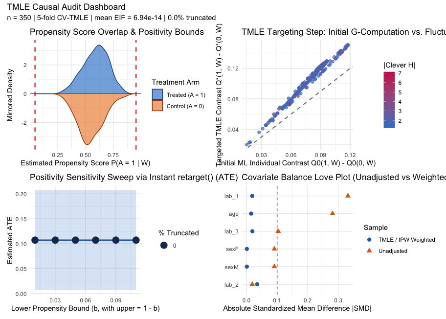

tidytmle brings Targeted Maximum Likelihood Estimation (CV-TMLE) to the tidymodels ecosystem. Rather than forcing causal estimation into a prediction-only parsnip model, tidytmle orchestrates workflows, workflowsets, recipes, rsample, hardhat, and yardstick so you can plug any machine learning pipeline into a doubly robust, locally efficient causal estimator.
Which Function Do I Need?
| What you want to do | One-line tidytmle call |
|---|---|
| Estimate ATE, Risk Ratio, & Odds Ratio safely | tmle_spec(y, a, c(age, sex, lab_1), estimand = c("ate", "rr", "or")) \|> fit(df) |
| Handle missing outcomes automatically | Omit censoring when y has NAs (or pass censoring = delta) |
Plug in a custom workflow_set Super Learner |
set_outcome_learners(wf_set) \|> set_treatment_learners(wf_set) |
| Account for clinic clusters or survey weights | Pass id = clinic_id and weights = survey_wt inside tmle_spec()
|
| Read a plain-English interpretation & health audit |
summary(fit) or explain_tmle(fit)
|
| Test stricter positivity bounds or subgroups instantly | retarget(fit, g_bounds = c(0.05, 0.95), subgroup = age >= 65) |
| Inspect a 4-panel visual audit dashboard | autoplot(fit, type = "dashboard") |
| Shift a continuous dose without extrapolating | tmle_spec(y, dose, c(...), estimand = shift(1.0)) \|> fit(df) |
| Estimate heterogeneous treatment effects (CATE) |
fit_cate(fit) then predict(cate, new_data) or qini_auc(cate)
|
Why TMLE? The 60-Second Intuition
Standard machine learning regression (G-computation) minimizes global prediction error rather than the bias-variance trade-off for a causal treatment effect—leaving residual confounding bias and invalid confidence intervals. Conversely, inverse-probability weighting (IPTW) discards outcome modeling and blows up in variance whenever propensity scores approach 0 or 1 (positivity violations).
TMLE resolves both weaknesses with a simple two-stage philosophy: “Predict, Then Target.” (Schuler & Rose, 2017; Luque-Fernandez et al., 2018; van der Laan & Rubin, 2006):
| Estimator | What It Models | Key Trade-off |
|---|---|---|
| G-Computation | Outcome | Optimizing global outcome accuracy leaves slow-converging bias in causal contrasts. |
| IPTW Weighting | Propensity | Ignores outcome structure; unstable variance when is near 0 or 1. |
Targeted MLE (tidytmle) |
Both and , then fluctuates | Doubly robust (consistent if either model is right), locally efficient, and bounded inside natural outcome limits. |
The 5-Step TMLE Recipe & Decoder Ring
Every TMLE fit executes five concrete steps mapped cleanly to augment(fit) and glance(fit) columns:
| Step | What Happens Under the Hood |
tidytmle Columns |
|---|---|---|
| 1. Initial Outcome Fit () | Cross-validated Super Learner predicts counterfactual outcomes under treatment and control. |
.q1_init, .q0_init
|
| 2. Propensity Fit () | Classification Super Learner estimates (strictly excluding and from predictors) and applies adaptive bounds. |
.g_hat, .g_trunc, pct_truncated
|
| 3. Clever Covariate () | Constructs from the Efficient Influence Function (EIF) to spotlight potential confounding bias. | .clever_h |
| 4. Fluctuation () | Fits a weighted-intercept logistic submodel with as offset and weights, nudging predictions along the optimal bias-removal path. |
epsilon, .q1_star, .q0_star, plugin_vs_tmle_shift
|
| 5. Substitution & EIF Inference | Averages targeted counterfactuals and computes asymptotic SEs from the EIF variance (mean_eif must be ). |
.eif, .eif_leverage, mean_eif
|
For a full worked visual walkthrough—including a live demonstration of double robustness—read TMLE Intuition: A Step-by-Step Visual Guide (or vignette("tmle-intuition", package = "tidytmle")).
Installation
tidytmle is currently in pre-CRAN development. You can install the development version from GitHub with:
# install.packages("pak")
pak::pak("perceptioninterval/tidytmle")Example
Start with a 3-line cross-fitted specification using tidyselect causal roles and simultaneous multi-estimand inference, then call summary(fit) for a plain-English causal interpretation and health check:
library(tidytmle)
df <- sim_causal_cohort(n = 350, outcome_type = "binary", seed = 42)
fit <- tmle_spec(
outcome = y,
treatment = a,
covariates = c(age, sex, starts_with("lab_")),
estimand = c("ate", "rr", "or")
) |>
set_resamples(v_folds = 5L) |>
fit(data = df)
summary(fit)
#>
#> ── Plain-English TMLE Summary ──
#>
#> Sample: 350 rows (350 observed outcomes) | 5-fold CV-TMLE
#>
#> ── 1. What the Causal Estimates Mean
#> ℹ ATE (across the full population): Treatment increases the expected outcome by 0.1072 units (95% CI [0.0072, 0.2072], p = 0.0357).
#> ℹ RR: Treatment corresponds to a 1.33x risk ratio (32.9% higher risk; 95% CI [1.01, 1.75], p = 0.0450).
#> ℹ OR: Treatment corresponds to an odds ratio of 1.58 (95% CI [1.02, 2.44], p = 0.0397).
#>
#> ── 2. What the Targeting Step Did
#> Fluctuating along the Clever Covariate shifted the initial ML plug-in estimate
#> by +0.0265 (epsilon = 0.0671) to remove residual confounding bias.
#>
#> ── 3. Statistical Health Check & Next Steps
#> ✔ Convergence: EIF estimating equation solved (mean EIF = 6.94e-14).
#> ✔ Positivity: 0.0% clipped at g_bounds [0.046, 0.954] (ESS: treated = 191.6, control = 132.9).
#> ✔ Influence: No single observation dominates variance (max EIF leverage = 3.2%).
# Simultaneous uniform confidence bands & VanderWeele-Ding E-values
tidy(fit, simultaneous = TRUE, e_value = TRUE)
#> # A tibble: 3 × 11
#> estimand term estimate std.error statistic p.value conf.low conf.high e_value
#> <chr> <chr> <dbl> <dbl> <dbl> <dbl> <dbl> <dbl> <dbl>
#> 1 ate ATE 0.107 0.0510 2.10 0.0357 0.00105 0.213 1.74
#> 2 rr RR 1.33 0.142 2.00 0.0450 0.989 1.78 1.99
#> 3 or OR 1.58 0.222 2.06 0.0397 0.995 2.51 2.54
#> # ℹ 2 more variables: e_value_ci <dbl>, crit.value <dbl>
# Instant retargeting without ML refitting
retarget(fit, g_bounds = c(0.05, 0.95)) |>
tidy()
#> # A tibble: 3 × 8
#> estimand term estimate std.error statistic p.value conf.low conf.high
#> <chr> <chr> <dbl> <dbl> <dbl> <dbl> <dbl> <dbl>
#> 1 ate ATE 0.107 0.0510 2.10 0.0357 0.00717 0.207
#> 2 rr RR 1.33 0.142 2.00 0.0450 1.01 1.75
#> 3 or OR 1.58 0.222 2.06 0.0397 1.02 2.44
# Propensity overlap diagnostic: check positivity across treated & control arms
autoplot(fit, type = "overlap")
Inspect how much the fluctuation step adjusted initial G-computation predictions—or view all four visual causal checks together in a single 2×2 dashboard—using autoplot():

Foundational Literature
- van der Laan, M. J., & Rubin, D. (2006). Targeted maximum likelihood learning. Int. J. Biostat., 2(1).
- Gruber, S., & van der Laan, M. J. (2010). A targeted maximum likelihood estimator of a causal effect on a bounded continuous outcome. Int. J. Biostat., 6(1).
- Zheng, W., & van der Laan, M. J. (2011). Cross-validated targeted minimum-loss-based estimation. Targeted Learning, Springer.
- Petersen, M. L., et al. (2012). Diagnosing and responding to violations in the positivity assumption. Stat. Methods Med. Res., 21(1), 31–54.
- Schuler, M. S., & Rose, S. (2017). Targeted maximum likelihood estimation for causal inference in observational studies. Am. J. Epidemiol., 185(1), 65–73.
- Luque-Fernandez, M. A., et al. (2018). Targeted maximum likelihood estimation for a binary treatment: A tutorial. Stat. Med., 37(16), 2530–2546.
- Díaz, I., Williams, N., Hoffman, K. L., & Schenck, E. J. (2021). Nonparametric causal effects based on longitudinal modified treatment policies. JASA, 118(542), 846–857.
- Kennedy, E. H. (2023). Towards optimal doubly robust estimation of heterogeneous causal effects. Electron. J. Stat., 17(2), 3008–3049.
Code of Conduct
Please note that the tidytmle project is released with a Contributor Code of Conduct. By contributing to this project, you agree to abide by its terms.